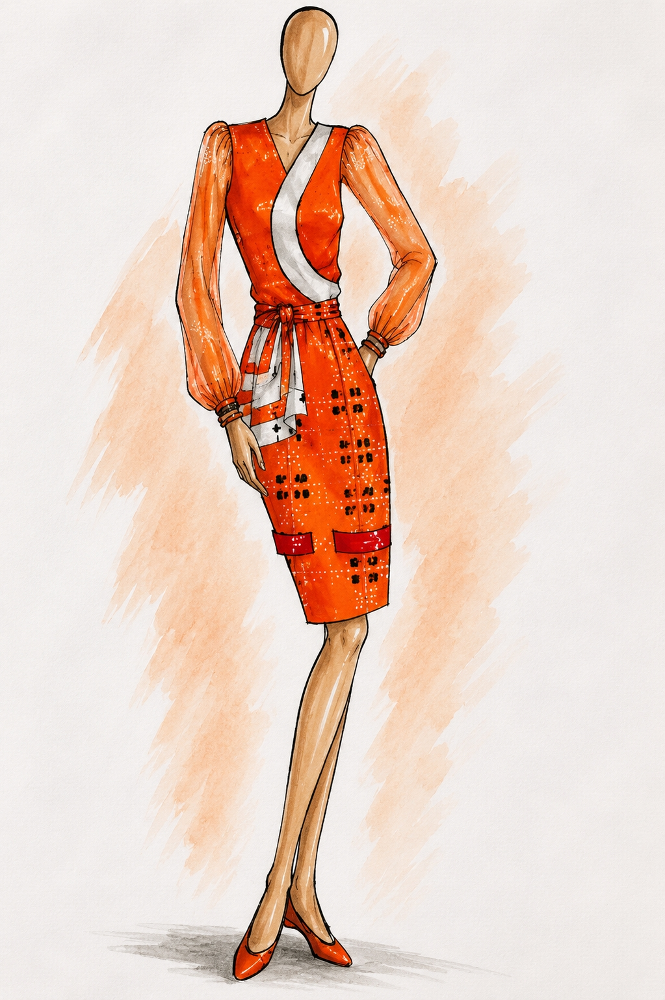
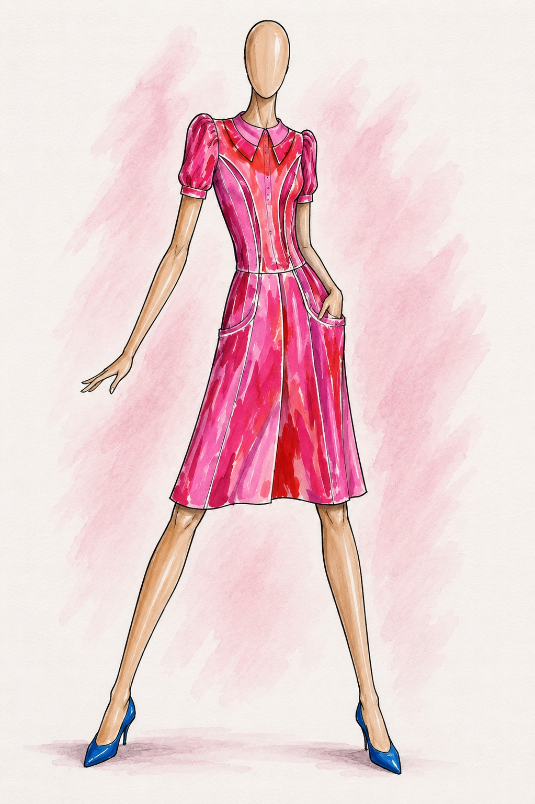
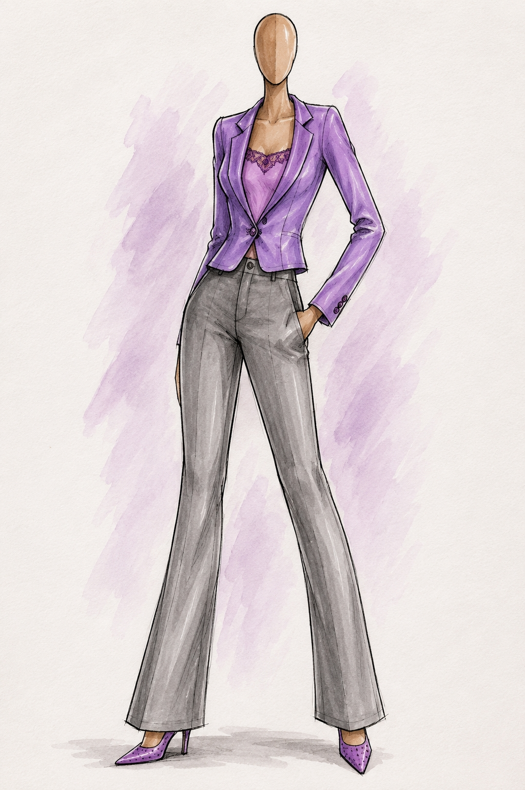
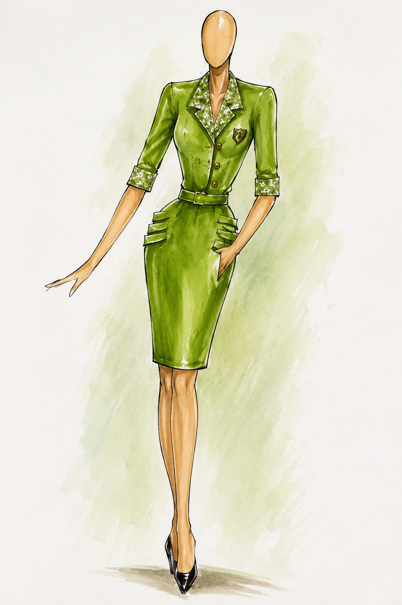
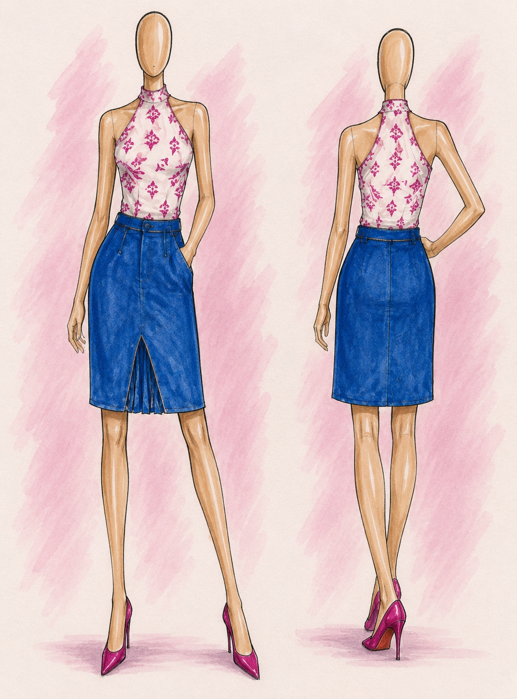
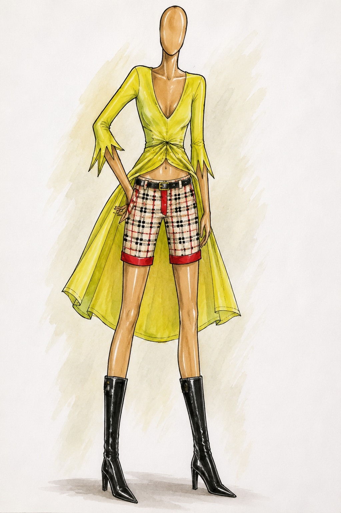
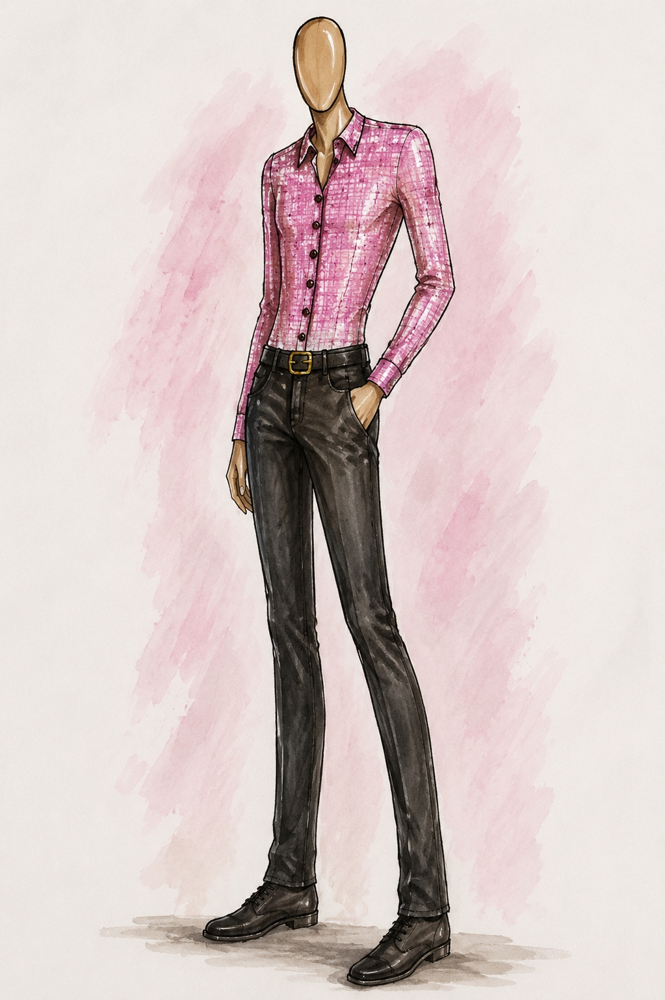

01 / 07
Crossing Lines
Design Concept
A wrap dress with sheer sleeves, a crossover bodice and a tied waist. The concept explores elegant occasionwear through bold colour, soft draping and African-inspired textile details.
Fashion Archive
Concept Development
These fashion illustrations represent early concept studies exploring tailoring, colour, proportion and garment construction. Together they document Joycenuwa's design process, where ideas are developed, refined and translated into contemporary womenswear before becoming finished garments or collections.
← Back to Fashion01 · Design Concepts
Seven original fashion illustrations documenting the creative process behind Joycenuwa's fashion practice.

01 / 07
Design Concept
A wrap dress with sheer sleeves, a crossover bodice and a tied waist. The concept explores elegant occasionwear through bold colour, soft draping and African-inspired textile details.

02 / 07
Design Concept
A shirt dress featuring puff sleeves, oversized pockets and painterly prints. The illustration reimagines a classic day dress through confident colour and clean construction.

03 / 07
Design Concept
A contemporary tailored suit pairing a structured blazer with wide-leg trousers and a delicate camisole, exploring modern professional dressing with a softer aesthetic.

04 / 07
Design Concept
A structured jacket dress with a belted waist, printed lapels and functional pocket details. Inspired by utility tailoring while maintaining refined elegance.

05 / 07
Design Concept
Presented from both front and back, this coordinated ensemble pairs a printed halter-neck top with a structured denim skirt, revealing construction details from multiple viewpoints.

06 / 07
Design Concept
A flowing asymmetrical tunic paired with checked tailored shorts and knee-high boots. The concept experiments with layering, contrast and expressive contemporary styling.

07 / 07
Design Concept
A fitted button-through shirt styled with tailored trousers, presenting a clean interpretation of modern workwear through simplicity, balance and versatility.